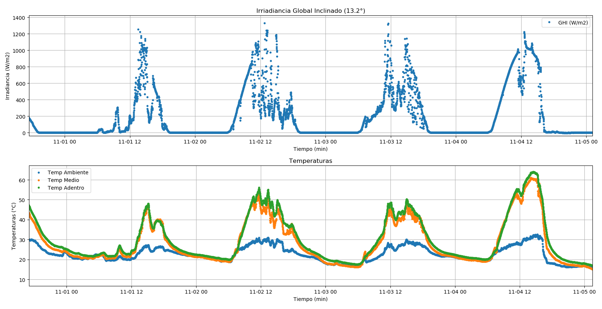
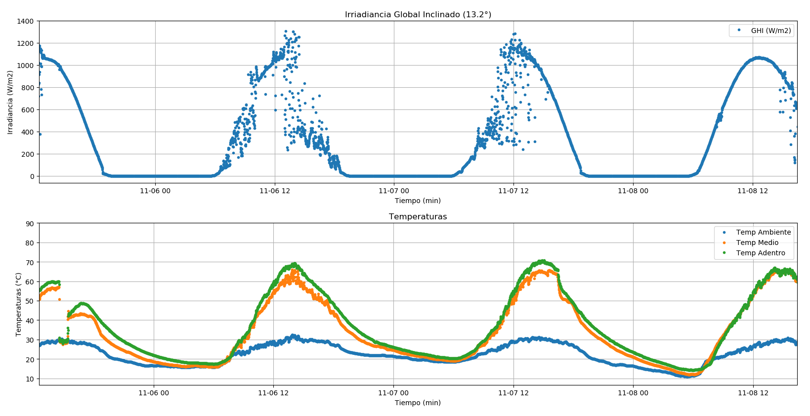
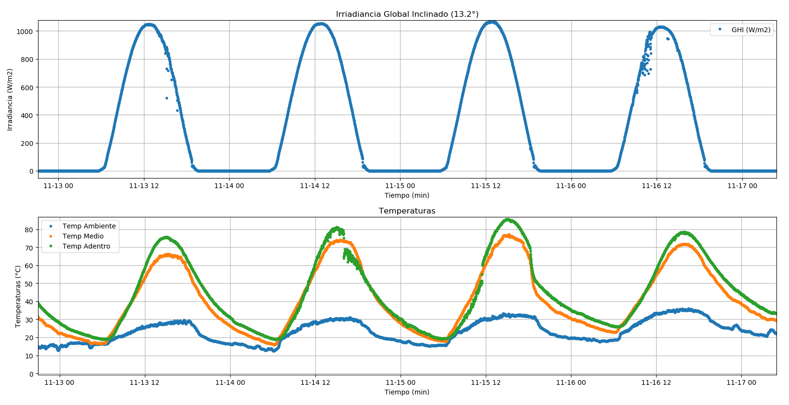

Prototipo¶
Construcción y pruebas del prototipo
Para la realización de este proyecto construí un prototipo que me ayudó a entender su funcionamiento y, al mismo tiempo, me permitió mejorarlo.
El prototipo comenzó con un primer diseño a mano en una hoja. En este primer diseño definí las características principales que debería tener, como sus dimensiones y su inclinación. La idea al definir sus dimensiones fue crear algo de poco tamaño pero eficiente, para que pudiera ser ubicado en lugares pequeños.
La inclinación de la lámina transparente superior es de 13 grados, lo que favorece principalmente la captación de radiación solar durante el verano en nuestro país, cuando el sol alcanza sus puntos más altos. Además, esta inclinación es fundamental para que las gotas de agua condensadas puedan deslizarse hasta el tubo recolector.

Ángulo Solar y bosquejo inicial
Objetivos:
El objetivo de realizar un prototipo inicial e ir probando diferentes configuraciones, aislaciones y demás, es alcanzar el mayor rendimiento posible del desalinizador. Esto conlleva reducir las pérdidas de calor, aumentar la temperatura interior y, como resultado, obtener una mayor producción de agua potabilizada.
Se buscaba alcanzar la mayor temperatura posible dentro del desalinizador y obtener una cantidad de agua potabilizada por día cercana a un vaso promedio de 300 ml.
Construcción del prototipo:
El prototipo lo creé utilizando materiales reciclados de varias construcciones. Para empezar, recolecté todo lo necesario para la construcción. El acumulador está compuesto por una caja de madera, un vidrio y un revestimiento interior de nylon para evitar las fugas de agua. Además, incluye un tubo que recoge las gotas que se deslizan del vidrio y las dirige hacia el exterior para poder recolectarlas. También tiene un orificio con otro tubo de menor diámetro en uno de sus laterales, que sirve para verter el agua salada.
Pasos para la creación:
Para la creación del prototipo, utilicé herramientas manuales. Empecé cortando la madera para hacer la caja que almacenaría el agua salada para ser evaporada. Realicé los cortes con una sierra circular eléctrica y ensamblé las piezas con clavos y grampas. Para hacer los agujeros de entrada y salida del agua, utilicé un taladro con broca. El vidrio lo fijé a la caja de madera con silicona, lo que me permitió sellarlo y evitar que el agua se contamine con objetos o lluvia. También para prevenir pérdidas de vapor debido a la elevación de temperatura.


Corte y ensamble
-Prueba 1:
Luego del armado continue a revestirlo con nylon en su interior para que no tuviera fugas de agua. Realizado este paso proseguí a verificar que no existiera ninguna fuga, al ver que estaba bien retome con los siguientes pasos para su funcionamiento. Coloque el vidrio superior junto con el tubo de recolección y lo selle herméticamente a la caja. Al ponerlo en el sol por varias horas vi que este no lograba condensar más que algunas gotas de agua, esto se debía a que en esas primeras pruebas la radiación solar que estaba llegando era muy baja. En ese periodo donde estaba ubicado recién estaba culminando el invierno. Otro de los motivos, era que mi prototipo tenía muchas perdidas de calor la cual me impedía el aumento de temperatura en su interior.
-Prueba 2:
Tras revisar las conclusiones anteriores, decidí realizar algunas mejoras. Pinté la parte interior de la caja con pintura en aerosol de color negro para favorecer la acumulación de energía solar y aumentar así la temperatura interna. Además, para reducir las pérdidas de calor en la zona del cuerpo transparente ubicado en la parte superior, opté por instalar un doble vidrio. Esto permitió crear una capa de aislante térmico entre ambos vidrios, ayudando a mantener el calor dentro.
Sin embargo, también añadí una placa reflectiva en la base interior, con la intención de mejorar la eficiencia. Con el tiempo, me di cuenta de que esta modificación no tuvo los efectos esperados y, de hecho, empeoró el rendimiento, ya que no favoreció el aumento de la temperatura interna.


Colocación de doble vidrio

Fotos térmicas sin aislación
Mientras realizaba todos estos cambios, no sabía cuáles mejoras realmente me beneficiaban y cuáles no. Para poder obtener datos más precisos y tomar decisiones informadas sobre futuras mejoras, decidí instalar una estación de medición. Esta estación me permitió recopilar datos clave para evaluar el desempeño del sistema.
La estación de medición consiste en un sensor para medir la Radiación Solar (PAR) y tres sensores de temperatura (PT1000). Todos estos datos eran recogidos por un registrador de datos (Datalogger), que tomaba lecturas cada 10 segundos y calculaba el promedio por minuto. Esto me permitió graficar y visualizar los datos en tiempo real, lo que fue muy útil para monitorear los avances de las mejoras.
Cabe mencionar que el sensor PAR estaba instalado con la misma inclinación que el vidrio, y tanto la estación de medición como el colector estaban orientados hacia el norte solar para garantizar la precisión de las mediciones.


Adquisidor de datos y sensores de temperatura
Primeros datos:

Gráfica de radiación y temperaturas
En las gráfica podemos apreciar 4 días de pruebas, donde en la gráfica superior se puede observar la radiación solar que llega a nuestro desalinizador (Radiacion Global en plano inclinado) y en las de abajo las diferentes temperaturas obtenidas para ese día. La grafica de temperatura en color azul, es la temperatura ambiente fuera de la caja, la de color naranja es la temperatura entre ambos vidrios y la de color verde es la interior del desalinizador. Al mirar las gráficas podemos ver que en dias de Primavera-Verano donde la caja no tiene aislacion, se pudo obtener un aumento de temperatura de 30°C con respecto la temperatura ambiente exterior.
-Prueba 3:
Al ir examinando las fotos térmicas vistas anterior mente y los resultados que se obtuvieron, opte por aislar el acumulador térmicamente. Utilice espuma plast de 2 cm de espesor y membrana refractante para mitigar las perdidas.


Aislación térmica

Fotos térmicas con una aislación

Gráfica de radiación y temperaturas
Con este progreso pude observar una mejora en el aumento de las temperaturas en el interior del desalinizador. Pude analizar que para un día soleado de Primavera-Verano y una temperatura ambiente de 30°C pude alcanzar una temperatura dentro del desalinizador de 70°C Lo que podemos asumir que hubo una mejoría en cuanto al aumento de temperatura dentro del desalinizador.
-Prueba 4:
Luego de obtener estos datos y junto a las fotos térmicas, se podía seguir notando que todavía existían perdidas de calor por la aislación anteriormente colocada. Al ver esto decidí colocarle otra capa de aislación para moderar las pérdidas y mejorar la temperatura interior. Junto a este cambio, realice la extracción de la placa refractante que tenía en su interior y, en su lugar coloque grava de color negra.

Grava
Luego de hacer estas mejoras, continue con las pruebas y experimentos para ver las mejoras que esto causaba.

Fotos térmicas con doble aislación

Gráficas de radiación y temperaturas
Al mirar estos datos, pude notar que para días totalmente soleados de Primavera-Verano, con temperaturas que rondaban los 30°C pude obtener un aumento de temperatura en el interior del desalinizador que llegaban a 85°C, lo cual favorece un montón en cuanto a la cantidad de agua destilada obtenida.
Pruebas de agua
También para validar el proceso y el producto, realice pruebas de agua con respecto a la cantidad de sal contenida antes y después de pasar por este tipo de procesamiento. Utilice un instrumento el cual me permitía la medición de varios parámetros, de los cuales tome la conductividad, salinidad y temperatura del agua. Estos tres parámetros están relacionados entre sí ya que al aumentar la temperatura también aumenta la conductividad del agua, lo que también ocurre si aumenta o disminuye la salinidad.

Instrumento para medir salinidad, conductividad y temperatura
Para realizar las pruebas tome muestras de agua provenientes de diferentes lugares, la primera prueba que realice fue sacando agua de la red potable localizada en mi localidad y pasada por un filtro purificador. La siguiente prueba fue tomando agua de la misma red, pero sin pasar por este purificador.
Al estar lejos de una fuente de agua de Mar y no tener acceso directo a ella, opte por agregar una cantidad conocida de Sal de mesa (NaCl) a un volumen de agua conocido, haciendo así que este fuera lo más parecido al agua encontrada en el mar (35g de sal por litro de agua).

Agua salada

Datos obtenidos de las distintas pruebas
Al concluir estas pruebas realicé la medición de cuanta cantidad de agua desalinizada podía llegar a obtener con todas estas mejoras, lo que en definitiva, pude obtener fueron hasta 350ml de agua en un día completo, lo que equivale a un vaso promedio por día.
Con este proceso y estas características, se debería de escalar 6 veces este acumulador, lo que equivale a 1.5m2 para obtener la cantidad de 2lts de agua necesaria para abastecer a una persona en un día.
Conclusion:
Al finalizar todas las mejoras y alcanzar los resultados finales, concluí que no solo logré cumplir con el objetivo fijado, sino que lo superé al alcanzar el promedio estimado. El agua producida es 100% potable y libre de sales, lo que convierte este producto en una solución ideal para generar agua potable en zonas costeras cercanas a mares y océanos, donde el agua dulce y potable es escasa. También podría ser utilizado en situaciones de desastres naturales imprevistos, donde el acceso a una red de agua potable es limitado, así como en zonas desérticas donde el agua potable es extremadamente escasa.
Anexo:

Tabla de medidas y materiales utilizados